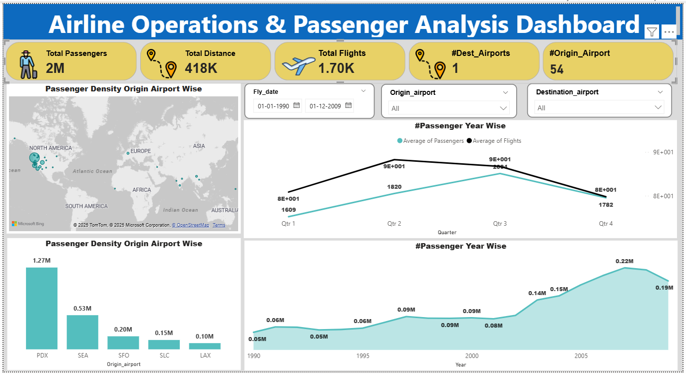

📊 Analytics Controls & Filters
Live Dataset (1990–2009)2.0M
Total Passengers Handled
1.7K
Operated Flights
418K
Total Miles Covered
54
Origin Airports
Portland (PDX)
Top Traffic Hub (1.27M)
📈 Passenger Traffic Density (1990–2009)
Annual passenger volume growth over two decades
📍 Route Distance vs. Flight Operations
Major flight corridors and passenger distribution
📁 Power BI Desktop Dashboard Report
This analytics dashboard was designed and modeled in Power BI Desktop. It features interactive DAX measures, seasonal quarterly trends, origin-destination mapping, and data transformations built by Yashika Singh.

Power BI Dashboard Preview📋 Operational Dataset Preview
| Flight Date | Origin | Destination | Passengers | Distance (mi) | Flights Count |
|---|